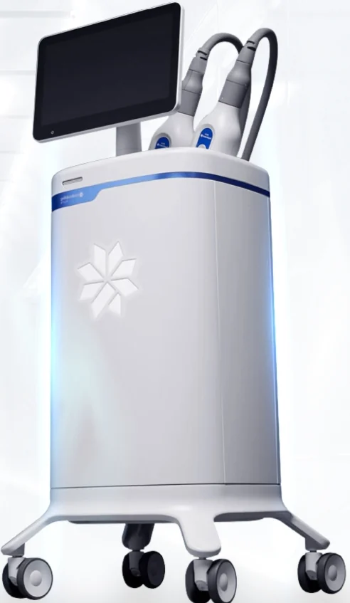

Results from studies
A 2015 review in Plastic and Reconstructive Surgery looked at 19 studies on fat freezing. The fat layer in the treated area was 14.7 to 28.5 percent thinner when measured with calipers and 10.3 to 25.5 percent thinner on ultrasound. Most of the results came to around a fifth of the fat in the area. Allergan, the maker of CoolSculpting, gives an average of 24 to 27 percent.
Your body clears the dead fat cells over the following weeks, so the change shows slowly and is easiest to see at 3 months.
Before the session
Your first visit starts with a body composition scan and a talk with the doctor. The doctor pinches the area to check that the fat is soft enough to fit in the applicator, marks the spot and takes photos to compare with at 3 months.
Eat normally beforehand and wear loose clothes. You don't need to stop exercising or change your diet.
During the session
A gel pad goes on your skin to protect it and the applicator goes on top. It sucks the fold of fat in and starts to cool it. It feels very cold and tight for the first 5 to 10 minutes, then the area goes numb.
We use CoolSculpting Elite, which cools the fat to between -11 and -13 °C. A sensor system called Freeze Detect watches the skin and protects it from cold injury.
You can read or use your phone for the rest of the session. When the applicator comes off, the area looks firm and pale for a few minutes. The nurse massages it for about 2 minutes to help break up the frozen cells. It can hurt a little, and the maker says the massage adds up to 68 percent to the result.
After the session
You can go back to work, drive and exercise on the same day. Right after, the area can feel tight and look red, bruised or a little swollen. Over the next 1 to 2 weeks it can itch, give sharp pains or feel numb, and the numbness can last a few weeks. After treatment under the chin, the back of your throat can feel full. Most of this goes away within 1 to 2 weeks.
A rare side effect is paradoxical adipose hyperplasia, where the treated fat gets bigger and firmer a few months after the session instead of shrinking. A 2014 report put it at about 1 in 20,000 treatments and later reports have put it higher.
Who it's for
CoolSculpting works best if you're close to your goal weight, have soft fat you can pinch and have a BMI under 35. It takes fat out of one area and won't bring your weight down much. If you also want to lose weight, the doctor may pair it with 1 Week 1 Kilo.
It can't be used if you have hives from cold (cold urticaria), cryoglobulinaemia, cold agglutinin disease, paroxysmal cold haemoglobinuria or a bleeding disorder. You'll need to wait if you're pregnant.
CoolSculpting or liposuction
Liposuction takes out more fat at once. It's surgery done through small cuts under anaesthetic, and you need a week or more to recover and a compression garment after. CoolSculpting takes out less fat per session, but you don't need any time off and the change builds over 3 months. If you want a big change in several areas at once, surgery is usually the better choice.
Questions
Does it hurt?
It feels very cold and tight for the first 5 to 10 minutes until the area goes numb. The massage afterwards can sting for about a minute.
How many sessions do I need?
One session is often enough for an area. We suggest a second one 8 to 12 weeks later for a clearer result, and the doctor decides after measuring the fat at your first visit.
Will the fat come back?
The fat cells that were treated are gone for good. The ones left in the area can still get bigger if you gain weight.
Will I weigh less?
Only a little since the fat in one area doesn't weigh much. You'll notice it more in how your clothes fit and in the photos at 3 months.
Can I exercise after?
Yes, on the same day.
Is it FDA cleared?
Yes. The FDA cleared it for the flanks in 2010 and later added the belly, thighs, upper arms, under the chin, the bra line, the back and under the buttocks.
Sources
- Apex Hospital & Clinics. CoolSculpting Elite brochures, 2026.
- Allergan Aesthetics. CoolSculpting Elite treatment guide by area, 2026.
- Manstein D, Laubach H, Watanabe K, Farinelli W, Zurakowski D, Anderson RR. Selective cryolysis: a novel method of non-invasive fat removal. Lasers Surg Med. 2008;40(9):595-604. doi:10.1002/lsm.20719
- Ingargiola MJ, Motakef S, Chung MT, Vasconez HC, Sasaki GH. Cryolipolysis for fat reduction and body contouring: safety and efficacy of current treatment paradigms. Plast Reconstr Surg. 2015;135(6):1581-1590. PubMed 26017594
- Jalian HR, Avram MM, Garibyan L, Mihm MC, Anderson RR. Paradoxical adipose hyperplasia after cryolipolysis. JAMA Dermatol. 2014;150(3):317-319.
- Apex Medical Center. CoolSculpting service page. apexmedicalcenter.co.th
Results vary from person to person. The doctor checks whether a treatment suits you at your consult.